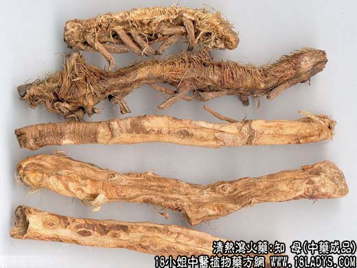

原文连接:https://www.daquan.com/post/2022.html



本品为常用中药。《神农本草经》列入中品。蚔母。
来源：为百合科多年生草本植物知母（Anemarrhena asphodeloides Bunhe）的干燥根茎。
产地：河北省易县、张家口、蓟县、山西、河南、内蒙。以易县产品俗称西陵知母最为著名。
性状鉴别：毛知母：扁圆柱形，有时分叉，稍弯曲，虫体样，被棕黄色毛茸及叶基纤维。根头处因为有浅黄色叶痕和茎痕残留，残存的纤维束保住根茎头，故俗称金包头。表面有纵抽沟，环纹明显，下面多光秃，具椭圆形须根痕。质脆易断，断面黄色，散生维管束（筋脉点），味微甜后苦。以身条肥大，外皮附金黄色须毛，质坚实柔润，断面黄白色者为佳。
知母肉：趁鲜时去净外皮，晒干而成。黄白色，有纵皱和须根痕，余同毛知母。以条肥大，质坚色黄白者为佳。
主要成分：含多种甾体皂甙，水解后生成萨洒皂甙元，并含有烟酸，每克生药含烟酸200微克。
功效与作用：1、解热。前人的经验说知母能退实症、虚症之热。现代动物实验证实生品确有显著通热作用。知母与石膏不同，无论对高热或低热，均有一定请解作用。2、抗菌。体外实验对伤寒杆菌、大肠杆菌，葡萄球抑制作用较强。3、镇静。能降低神经系统的兴奋性。例如配黄柏能降低性神经兴奋（所谓泻肾火）；配酸枣仁可降低大脑皮层过度兴奋，治虚烦失眠；配桂枝可加强对风湿关节炎的镇痛作用；配白芍可治由于神经肌肉兴奋性增高而引起的筋惕（即肌肉纤维的搐搦）。知母对神经系统的镇静作用可能与其所含的烟酸有关。4、祛痰。
炮制：切片，生用或盐水制。
性味：苦寒。
归经：入肺，肾，胃三经。
功能：解热除烦，清肺滋肾。
主治：热病口渴，肺热咳嗽，阴虚燥热的虚汗骨头蒸。
临床应用：1、用于治疗温热病时的气分实热（证见石膏所述），辅助石膏，发挥解热和镇静作用。多夏季出现的久热不退（中医名暑疟，西医称夏季热），可配石膏、青蒿、麦冬、鳖甲、牛膝、橘红等，如再加小环钗、银花、南豆花，效果更好。
2、用于治疗虚热（慢性、消耗性疫病的发热），尤其下午低热。自觉热从骨内蒸发而出（前人称为“骨蒸”、盗汗、脉沉细而数，可配鳖甲、地骨皮。妇女产后的劳热，也可按此原则治疗。
3、用于治疗肾火亢盛（表现为遗精、梦泄、性神经兴奋增高等症状，并有喉痛、咽干、腰酸酸软）。此时用知母，取其有镇静作用，但须配黄柏，如知柏八味丸。知母、黄柏合用能加强 滋阴降火，从而能更好地起到镇静神经和消除炎症的作用。
4、用于治疗泌尿系感染。尤其适用于慢性肾盂炎而有阴虚阳亢“热象”的患者，可服知柏八味丸，以茅根汤送服，或以金银花煎汤送服。此方对尿有脓细胞而又不能用抗菌素的患者，更为适用。
5、用于治疗口腔炎、口腔溃疡、咽喉炎，辩证属阴虚火旺者。配玄参、生地或加露蜂房、甘草。
6、用于治疗消渴。例如糖尿病患者有口渴、烦热等肺胃燥热征象时，宜用知母配瓜萎根（天花粉）、麦冬等生津药治疗。
此外，知母外用可以治紫斑和过敏性皮疹，其法以知母加醋磨汁，搽患处，可促进退疹。
使用注意：1、知母有“滑肠”作用，脾虚便溏者不宜用；2、以前有人认为孕妇宜慎用知母，其实只要辩证准确（如孕妇期间有高热、烦躁、舌赤苔黄）， 仍可适当使用知母，配其它热药，以清热、除烦、安胎。
用量：常用量6～12g，大剂用到15~24g。
处方举例：知柏八味丸（《医宗金鉴》）：成药，也可作汤剂：知母9g，黄柏6g，熟地24g，山萸肉12g，淮山12g，茯苓9g，泽泻9g，丹皮9g，水煎服。
注：毛知母，主销华东、华南、西南地区及出口。知母肉，售天津、北京、华北、东北地区。